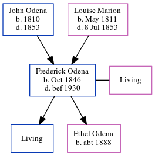

Frederick Marion Odena 1846 - 1930
[ Home ] | [ Calendar ] | [ Surnames Index ] | [ Family History ]The child of John Odena and Louise Marion, Frederick Odena, the three times great-uncle of Michele Copp (née Phillips), was born in South Carolina in Oct 18461,2,3,4,5 and, and was orphaned in 1853 by the death of both parents in that year her.
He married Amanda Eaglin (with whom he had 2 children: Frederick M Jr and Ethel A, along with 1 surviving child) in 1880During his life, he was living in St Michael and St Phillip, Charleston, South Carolina in 18501; in Atlanta Ward 2, Fulton, Georgia in 18602; in Detroit, MI in 18906; in Detroit City, Wayne, Michigan in 19003; and in Detroit Ward 8, Wayne, Michigan in 19204.
He died before 1930 in Michigan, USA5.
Parents
- John Hypolite was born in 1810
- Louise Marie was born in May 1811
Children
- Ethel A was born c. 1888
Citations
- 1850 United States Federal Census Online publication - Provo, UT, USA: The Generations Network, Inc., 2005.Original data - United States of America, Bureau of the Census. Seventh Census of the United States, 1850. Washington, D.C.: National Archives and Records Administration, 1850. M432,
- 1860 United States Federal Census Online publication - Provo, UT, USA: The Generations Network, Inc., 2004.Original data - United States of America, Bureau of the Census. Eighth Census of the United States, 1860. Washington, D.C.: National Archives and Records Administration, 1860. M653, 1
- 1900 United States Federal Census Online publication - Provo, UT, USA: MyFamily.com, Inc., 2004.Original data - United States of America, Bureau of the Census. Twelfth Census of the United States, 1900. Washington, D.C.: National Archives and Records Administration, 1900. T623, 1854 rolls.
- 1920 United States Federal Census Online publication - Provo, UT, USA: MyFamily.com, Inc., 2005. For details on the contents of the film numbers, visit the following NARA web page: NARA. Note: Enumeration Districts 819-839 on roll 323 (Chicago City.Original data - United States of America
- Michigan, Death Records, 1867-1950 Ancestry.com Operations, Inc.
- Detroit, Michigan Directory, 1890 Online publication - Provo, UT, USA: The Generations Network, Inc., 2000.Original data - Detroit City Directory, 1890. Detroit, MI, USA: R. L. Polk and Co., 1890.Original data: Detroit City Directory, 1890. Detroit, MI, USA: R. L. Polk and Co., 1890.
Family Tree
Generated by ged2site. Last updated on Jun 25, 2024